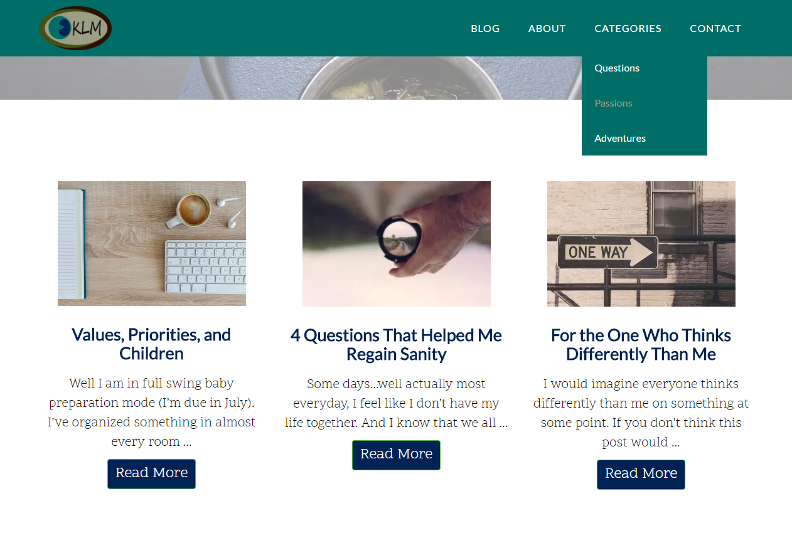

Camp Swatara is a family and summer camp located in southeastern Pennsylvania. The focus of this project was redesigning the hiking trails map with more accurate mapping of the trails.
Lancaster County Heritage Byway Map Atlas
This project involved developing a standard layout and design for a series of maps telling the story of Heritage Byways in Lancaster County.
South Middleton Township Official Map
This update to the existing Official Map included designing a visual hierarchy among thematic and reference layers, and developing a balanced system of labels for features.
Maps for the Web
CAEDC Interactive Data Map
The Interactive Data Map was developed for the Cumberland County Economic Development Corporation to promote the County to prospective businesses. It features a custom deployment of the Esri Shortlist Storytelling web map application.
Cumberland County Recycling & Disposal Map
This project was a web mapping application designed using Leaflet.js to assist residents of Cumberland County learn about solid waste disposal and recycling in ther municipality. The map developed using the BootLeaf theme.
PAMAGIC Members Map
This project was an interactive map of members of the Pennsylvania Mapping and Geographic Consortium. Bulit using the Esri Calcite Maps theme, the map allows users to search for members by name.
Desktop GIS Customization
Cumberland County Weeekly Data Updates
Various python scripts have been developed using the Esri ArcPy library to automate weekly data update processes using Windows Scheduled Tasks.
SARA Report Tool
The SARA Report Tool is a custom ArcGIS tool developed to assist Cumberland County Public Safety with the reporting for hazardous chemical facilties.
SCTF Regional Updates
Various python scripts have been developed to help automate the regional GIS data update process for the South Central PA Task Force.
Web Development
Kara Lee McKinney

This project included building a Wordpress site, managing updates to the site, and customizing the design/layout for the site.
PAMAGIC
I led a team in creating a custom website using Drupal for the Pennsylvania Mapping & Geographic Consortium. I am continuning to provide maintentance support for the site.